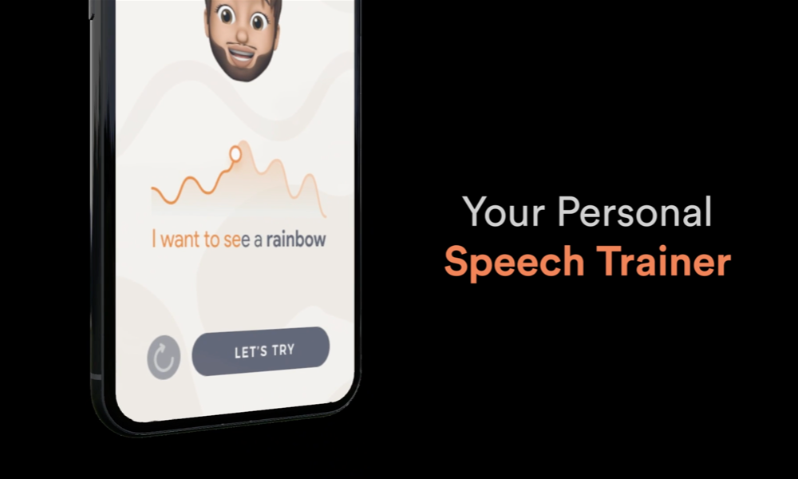
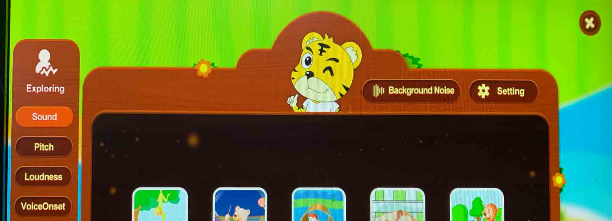
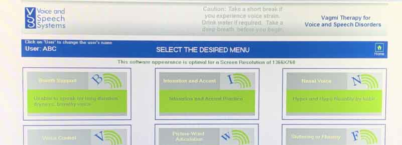
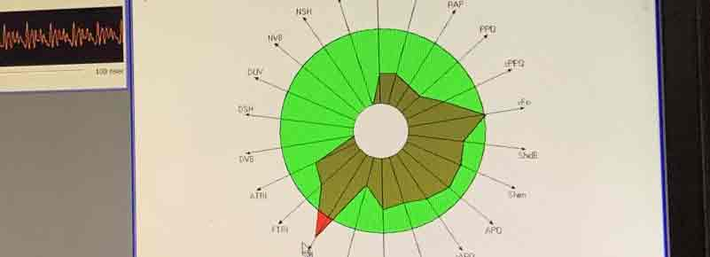
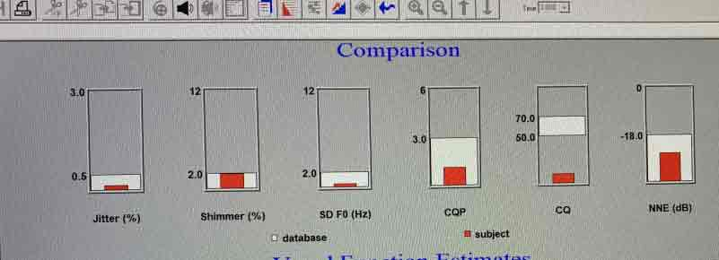

The Problem
Speech therapy for children with hearing impairment is a cumbersome and extensive, where the child is reliant heavily on the therapist during the formative years.
The Solution
Bolo is a one-of-a-kind intonation training application that allows any child to train intonation patterns with the help of realtime feedback and captivating gameplays.
Design Objectives
01
To enable the child to train voice without external guidance required.
02
To engage the child with playful gameplays and incentives.
03
To incorporate medically-certified training exercises for the child.
04
To provide realtime feedback to the child's current intonation levels.
Features
We designed and incorporated the following features aligned with the objectives we set for ourselves.
Personalised Trainer
There is a personalised trainer who guides the child through the stages of the training module and encouraging her to practice.
Real-Time Feedback
The application provides immediate feedback, akin to a doctor or a therapist. This ensures the exercises are effective.
Gamified Rewards
The child is enticed to practice more with the help of rewards and awards. Here, we have badges and a streak to keep the child engaged.
Background Study
Speech was a domain that was alien to the both of us. The first step involved interviewing and observing speech therapists to get an understanding of this domain. Some of the major insights we got were:
Speech therapy can span across 2-10 years, depending on the patient
Intonation is a part of voice modulation, the last stage of speech therapy
Intonation covers three parameters: frequency, intensity and rhytm.
Frequency is the pitch, intensity is the loudness and rhythm is a factor of time.
Intonation training is neglected by the children and the therapists alike
The importance of proper intonation is often highlighted, but isn't evident early
Intonation training requires repetitive exercises with proper feedback
During the formative years of the child, this leads to dependence on the doctor
Competitor Analysis
A critical part of this project was to understand currently available instruments used to aid therapists with speech therapy. This ensured we targeted the appropriate gap in the market.
Doctor Speech
This is a diagnostic and therapeutic tool with friendly interactions to help patients improve voice.
VAGHMI
VAGHMI is a diagnostic and therapeutic tool with statistical evaluation, primarily for doctors.
Multi-Dimensional Voice Program
This ia software application primarily used as a diagnostic tool toevaluate 33 different voice parameters.
Electroglottogram
This is an instrument that measures the vocal folds of the patient to highlight physical anomalies in the patient.
Target Market Area
We charted the various instruments on an expertise vs cost graph to evaluate how easy or difficult it owuld be for children to afford and use them by themselves.
What this mapping highlighted was a clear need for an easier, convenient and affordable tool for children to use themselves, so that they do not need to rely on the therapists anymore for intonation training.
Training Exercises
Using medically certified words from Dr. Speech, we sorted the words according to the difficulty in pronunciation and created a set of sentences that will the child uses to practice intonation.
We categorised the words according to categories.
We then plotted them accoridng to how difficult the sounds are.
Information Architecture
With a clear understanding of what was supposed to go into the application, we chalked out an information architecture before diving into wireframing.
Conceptualisation
Once we knew what we needed out of the application, we started iterating over the intonation trainer of the application, the most important aspect of the solution.
Dynamic Feedback
The first idea we had was a flappy bird-esque game where the high and lows of the pitch control the game element. We couldn't go ahead with this because of the technical feasibility.
Personalised Trainer
The second idea was to have a personalised trainer who guides the child through the training stages of the application. This proved to be feasible with the resources we had.
Familiar Elements
We used elements familiar to the children to depict highs and lows of pitch. The idea didn't come across as obvious and could lead to confusion in the child.
We went ahead with the second iterations, following positive feedback from the experts at the All India Institute of Speech and hearing, Mysore. We incorporated the suggested we received and went ahead designing the rest of the application.
Visual Moodboard
We looked at currently available mobile games for an understanding of how colors and UI elements are optimised for engagement and playfulness.
Latest Iteration


Development
We roped in Shivang Dalal, a computer science graduate, to help us develop a working prototype for the voice comparator. We successfully developed a proof of concept which provides us a score for how similar or dissimilar the reference intonation pattern and the child's intonation patterns are.
Python Script
The script records, compares and scores the pitch, intensity and rhythm of the child's voice against a reference voice graph.
The blue line refers to the child's pitch graph while the orange line is the reference pitch curve.
The blue line refers to the child's intensity graph while the orange line is the reference intensity curve.
Scores
The script provides a numeric score highlighting how different is curves are and how different the time spans are.
We conducted preliminary testing to see how the scores are ranged. A lot of work needs to be done to refine the script for a better, more accurate score.
-- the project is currently in progress --
Learning
This project taught me how to empathise with a community I wouldn't be able to directly relate to. The challenges involved with designing for children and particularly for the hearing-impaired were evident and it exciting to slowly see results. I also learnt how to work keeping in mind technical and resource limitations, something that is critical when working on industry projects.
Scope
The second half of this project focuses on generating more iterations and refining the design accoridng to rigorous testing. This includes running the application by child experts, speech therapists, subject matter experts and children with hearing impairement. This is going to be followed by marketing the application and how we can get the application published in the Google Play Store.